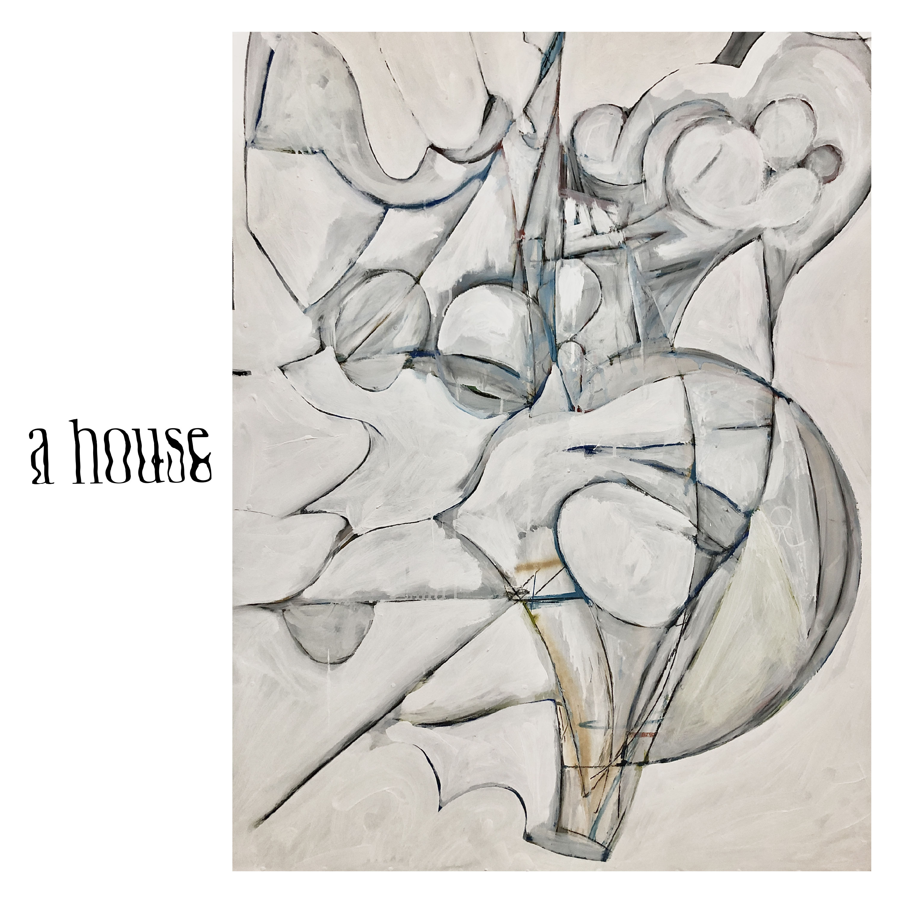
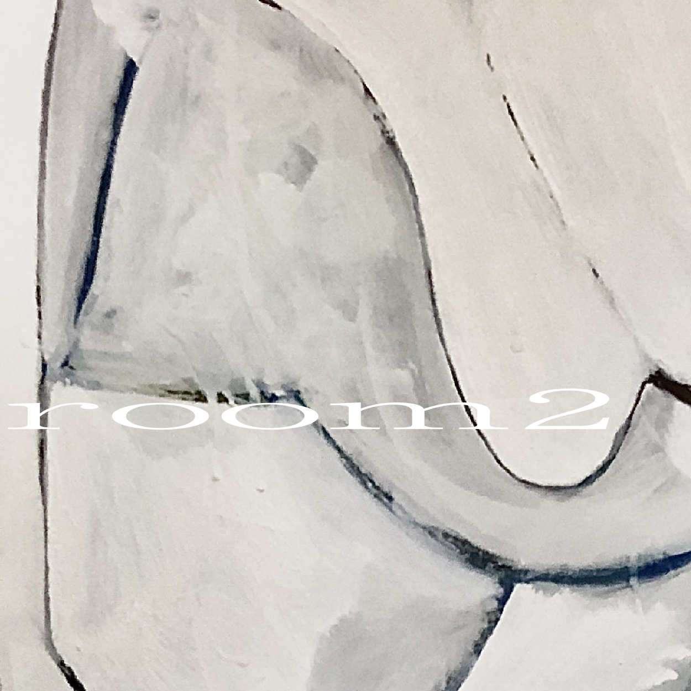
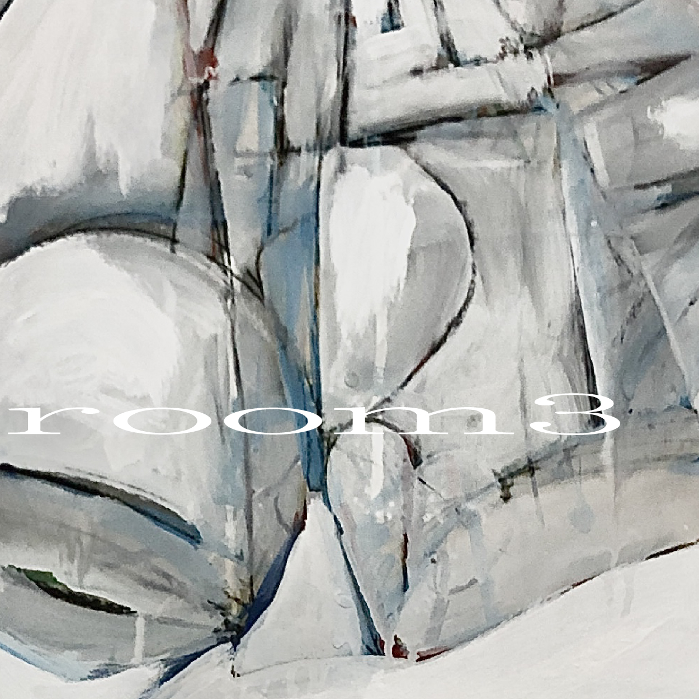
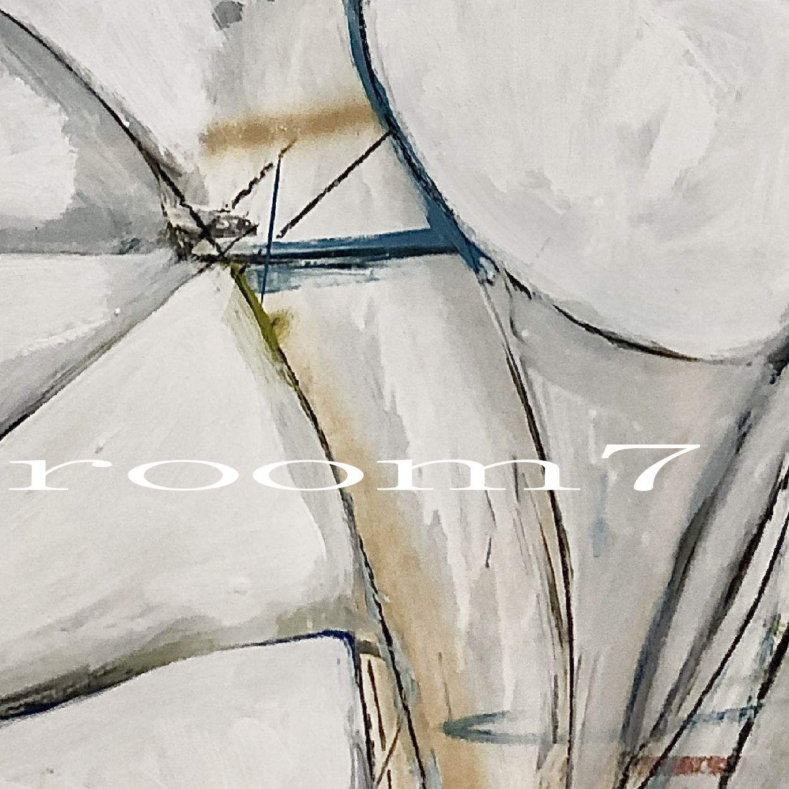
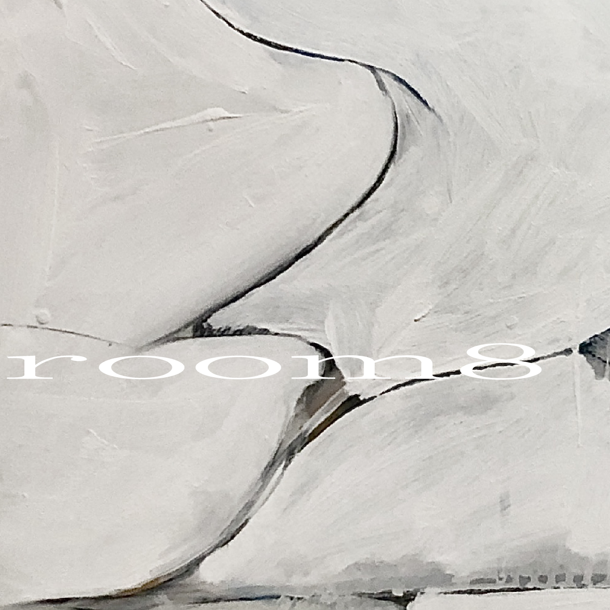
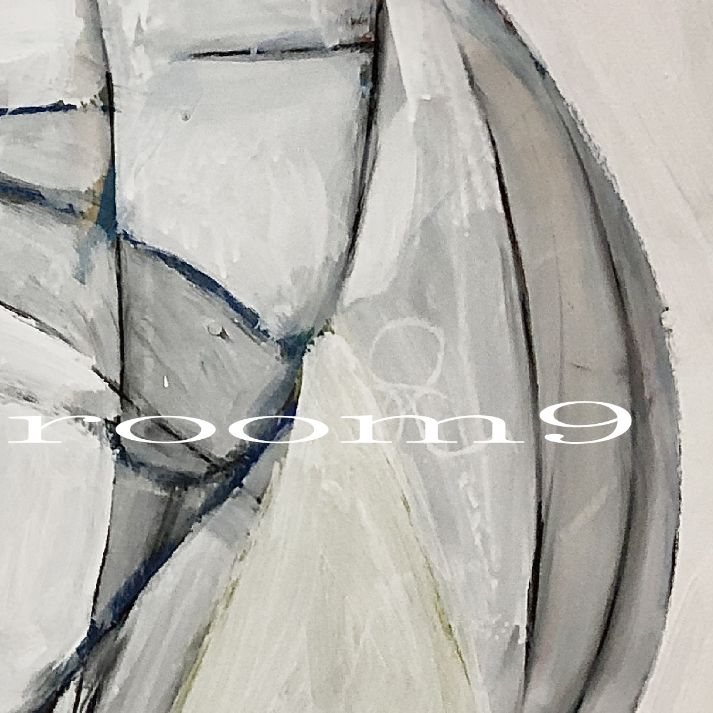
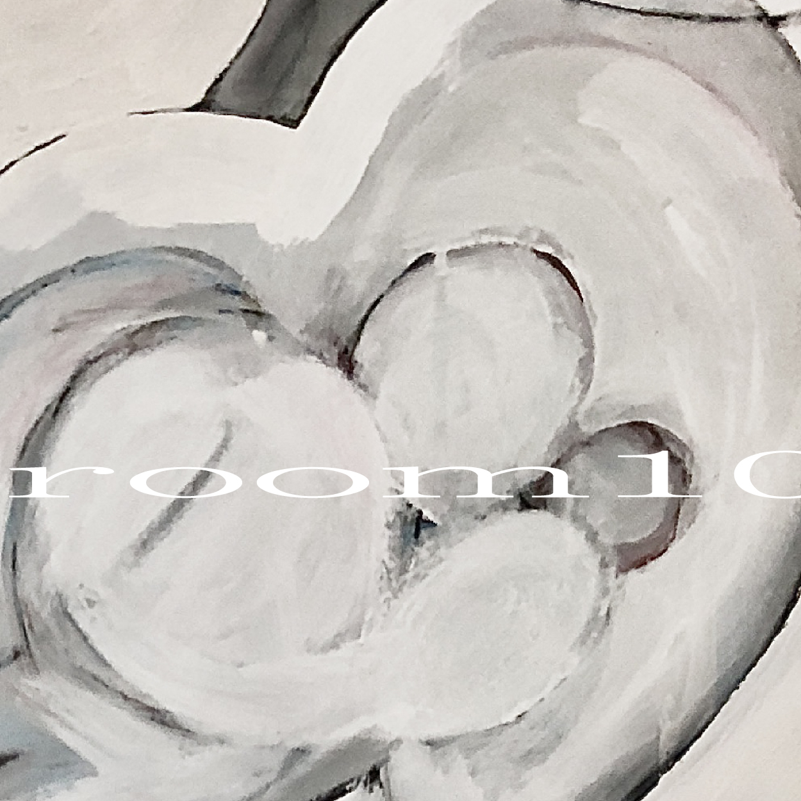
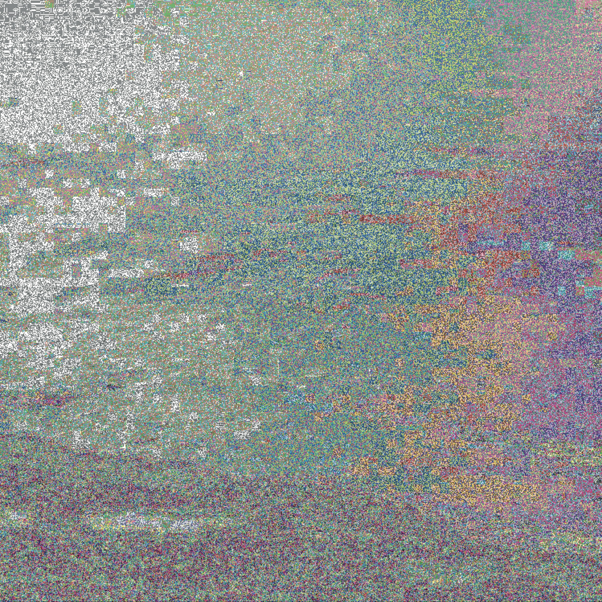
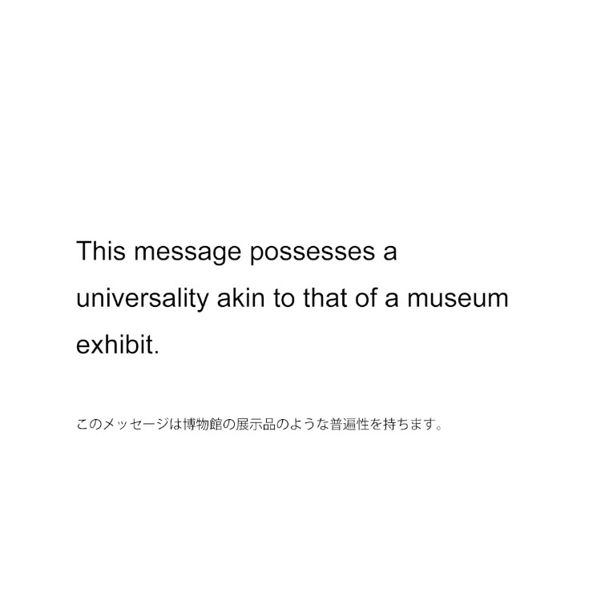

1st EP（2023）:
This music was created for one house that was to be demolished.
----------
Music: Leikh Ooy, nostalghia
All Arrangement: Leikh Ooy, nostalghia
Drawing: Hagioda Taiga
typography: Leikh Ooy, nostalghia

2nd EP（2026）:
This music was created to soundscape the atmosphere of "The philosophy of Living" a combined bookstore and flower shop.
----------
Music: Leikh Ooy, nostalghia
All Arrangement: Leikh Ooy, nostalghia
Artwork: Leikh Ooy, nostalghia

Single（2026）:
This is a piece of anti-war music—a definitive refusal of the inhumane massacres currently unfolding in our world.
I am speaking in English purely for the sake of clarity and reach, as it is the most widely spoken official language; this choice in no way implies the superiority of any language or ethnicity.
Following this statement, you will hear the words 'no war' spoken in 63 different languages—every language accessible via Google Translate as of 9:07 PM JST on March 24, 2026.
Please, listen.
----------
Music: Leikh Ooy, nostalghia
All Arrangement: Leikh Ooy, nostalghia
Artwork: Leikh Ooy, nostalghia
Leikh Ooy, nostalghia:
A music production project by Shotaro Nikami. The work primarily explores ambient, electronic, drone, contemporary music, field recordings, and spoken word.